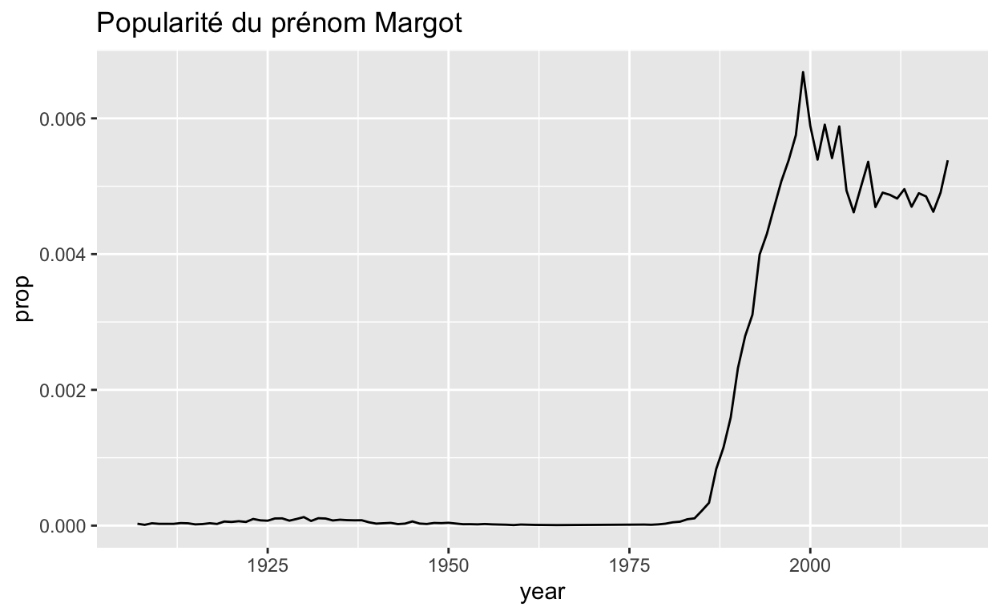
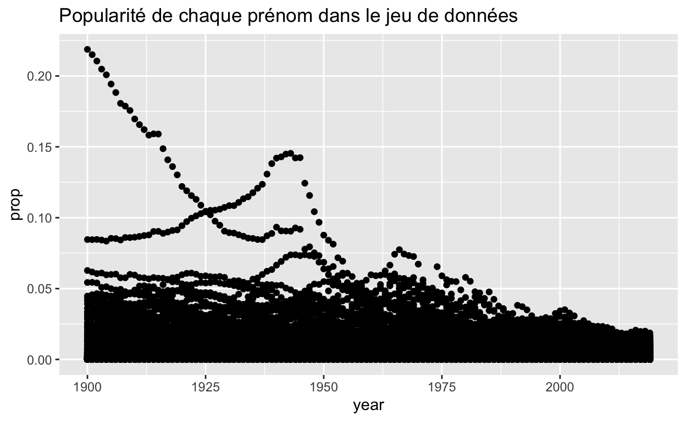
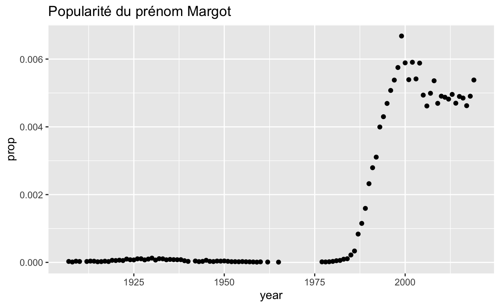
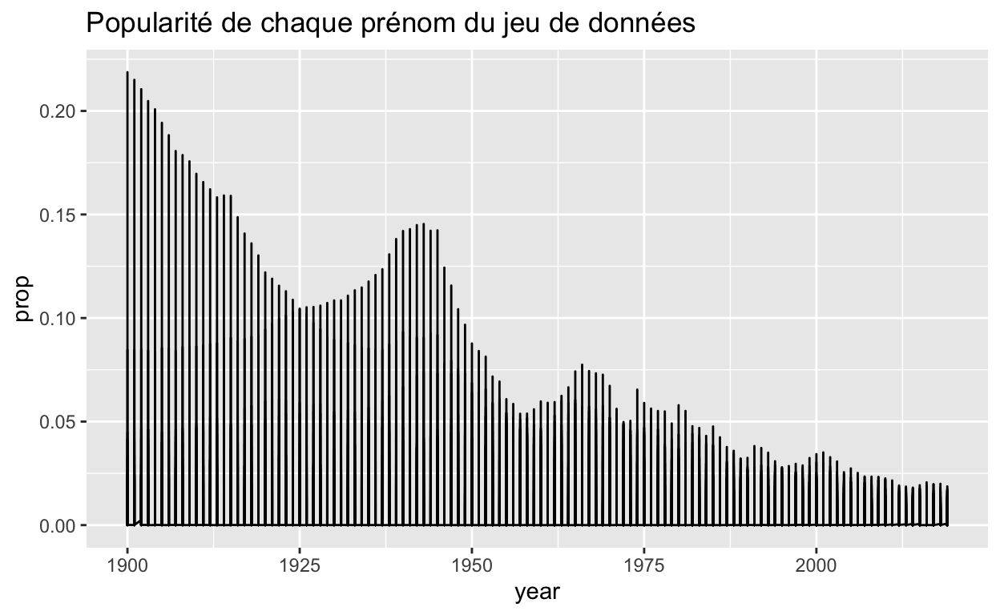

Dans ce module, vous allez explorer la popularité de différents prénoms au fil du temps. Pour réussir cette tâche, vous devrez maîtriser certains outils courants pour manipuler les données avec R :
View(), qui permettent d’inspecter vos données brutesselect() et filter(), qui permettent de selectionner des colonnes et des lignes d’un jeu de donnéesarrange(), qui vous permet de réordonner les lignes d’un jeu de données%>%, qui organise votre code sous la forme de “pipes” faciles à déchiffer (un pipe peut être vu comme un flux dans lequel divers traitements sur les données sont enchaînés)mutate(), group_by(), et summarize(), servent à calculer des statistiques descriptivesCe sont quelques-unes des fonctions R les plus utiles pour la data science, et les modules qui suivent vous fourniront tout ce dont vous avez besoin pour apprendre à les manipuler.
Dans les modules, nous utiliserons un jeu de données nommé prenoms, qui est fourni dans le package également nommé {prenoms} made in ThinkR (voir ici pour l’installer). Dans prenoms, vous trouverez des informations sur presque tous les prénoms donnés aux enfants en France métropolitaine depuis 1900.
Ce module présente prenoms ainsi qu’une nouvelle structure de données qui facilite l’utilisation des données dans R : le tibble.
En plus de {prenoms}, ce module utilise les packages de base du tidyverse, notamment {ggplot2}, {tibble} et {dplyr}. Tous ces packages ont été préinstallés mais ils n’ont pas été préchargés.
Cliquez sur le bouton “Suivant” pour commencer.
Avant de commencer, apprenons-en un peu plus sur nos données. Le jeu de données prenoms est fourni dans le package {prenoms}. Le package est préinstallé pour vous. Cependant, nous n’avons pas pré-chargé {prenoms}, ni aucun autre package d’ailleurs.
Qu’est-ce que cela veut dire ? Dans R, chaque fois que vous souhaitez utiliser un package qui ne fait pas partie de R base, vous devez charger le package avec la commande library(). Tant que vous n’aurez pas chargé un package, R ne pourra pas trouver les jeux de données et les fonctions qu’il contient. Par exemple, si nous demandions à R d’afficher le jeu de données prenoms, qui provient du package {prenoms}, nous obtiendrions le message ci-dessous : R ne peut pas trouver le jeu de données car nous n’avons pas chargé le package nécessaire.
prenoms## Error in eval(expr, envir, enclos): object 'prenoms' not foundPour charger le package {prenoms}, vous devez exécuter la commande library(prenoms). Après avoir chargé un package, R pourra trouver son contenu jusqu’à ce que vous fermiez R. En revanche, la prochaine fois que vous ouvrirez R, vous devrez recharger le package si vous souhaitez le réutiliser.
Cela peut sembler un inconvénient, mais le choix des packages à charger permet de garder le contrôle sur ce qui se passe dans votre environnement de travail avec R.
Dans le bloc de code ci-dessous, chargez {prenoms} (le package) puis ouvrez la page d’aide de prenoms (le jeu de données). Assurez-vous de lire la page d’aide avant de continuer.
library(prenoms)
?prenomsMaintenant que vous en savez un peu sur le jeu de données, examinons son contenu. Si vous exécutez prenoms sur votre console R, vous obtiendrez une sortie qui ressemble à ceci :
Nous avons au préalable modifié pour les besoins du cours les données de prenoms (comparé à celles disponibles dans le package) pour faciliter les tâches qui viennent. Voici maintenant le format des données prenoms (prop représente la proportion de bébés d’un sexe donné qui ont eu ce prénom cette année précise) :
## # A tibble: 252,981 × 5
## year sex name n prop
## <int> <chr> <chr> <int> <dbl>
## 1 1900 M Abel 378 0.00227
## 2 1900 M Abraham 8 0.0000480
## 3 1900 M Achille 150 0.000900
## 4 1900 M Achilles 4 0.0000240
## 5 1900 M Adam 9 0.0000540
## 6 1900 F Adelaide 140 0.000629
## 7 1900 F Adèle 623 0.00280
## 8 1900 F Adelheid 3 0.0000135
## 9 1900 F Adelina 25 0.000112
## 10 1900 F Adeline 168 0.000754
## # … with 252,971 more rowsVous pouvez utiliser les données de prenoms pour créer des graphiques comme celui-ci, qui révèlent la popularité d’un prénom au cours du temps, peut-être votre prénom.

Avant d’afficher les informations à propos d’un autre prénom, vous devrez réduire prenoms. Pour le moment, il y a plus de lignes dans prenoms que vous n’en avez besoin pour construire un graphique à propos d’un seul prénom.
Voyons la façon dont nous avons créé le graphique ci-dessus : nous avons commencé avec le jeu de données entier qui, si il était affiché sous la forme d’un nuage de points, aurait ressemblé à ceci :

Nous avons ensuite réduit les données aux seules lignes contenant le prénom “Margot” de sexe féminin, avant de tracer les données avec un graphique. Voici à quoi ressemblent les lignes avec ce prénom comme un nuage de points.

Si nous avions sauté cette étape, notre graphique linéaire aurait connecté tous les points du jeu de données entier, créant un graphique non informatif.

Votre objectif dans cette section est de répéter ce processus pour un autre prénom, par exemple le votre. En cours de route, vous apprendrez un ensemble de fonctions qui isolent les informations dans un jeu de données.
Ce type de tâche se produit souvent en Data science : vous devez extraire les données d’une table avant de pouvoir l’utiliser. Vous pouvez effectuer cette tâche rapidement avec trois fonctions fournies dans le package {dplyr} :
Chaque fonction prend un data.frame ou un tibble et renvoie un nouveau data.frame ou un tibble en sortie.
select() selectionne les colonnes d’un jeu de données et retourne les colonnes comme un nouveau jeu de données. Pour utiliser select(), passez-lui le nom du jeu de données dont extraire les colonnes, puis les noms des colonnes à extraire.
Aparté pour les déjà utilisateurs de R qui découvriraient le tidyverse : les noms de colonnes n’ont pas besoin d’apparaître entre guillemets ni d’être précédés par un $. En effet, select() sait les trouver dans le jeu de données que vous lui fournissez.
Utilisez l’exemple ci-dessous pour avoir une idée du fonctionnement de select(). Pouvez-vous sélectionner uniquement la colonne name ? Et comment extraire name et year ? Que diriez-vous de sélectionner toutes les colonnes sauf prop ?
select(prenoms, name, sex)# A tibble: 252,981 × 2
name sex
<chr> <chr>
1 Abel M
2 Abraham M
3 Achille M
4 Achilles M
5 Adam M
6 Adelaide F
7 Adèle F
8 Adelheid F
9 Adelina F
10 Adeline F
# … with 252,971 more rowsselect(prenoms, name)
select(prenoms, name, year)
select(prenoms, year, sex, name, n)Il existe également utiliser une série d’outils appelé “helpers” fournis avec select() et destinés à nous faciliter la vie. Par exemple, si vous placez un signe ‘-’ devant un nom de colonne, select() renverra toutes les colonnes sauf cette colonne. Pouvez-vous prédire comment le signe moins va fonctionner ici ?
select(prenoms, -year, -prop)Le tableau ci-dessous résume les autres outils de select() disponibles dans {dplyr}. Étudiez-le, puis cliquez sur “Continue” pour tester votre compréhension.
| Outil | Utilisation | Exemple |
|---|---|---|
| - | Exclusion de colonnes | select(prenoms, -sex) |
| : | Sélection des colonnes entre 2 colonnes spécifiques (inclusive) | select(prenoms, year:n) |
| contains() | Sélection des colonnes qui contiennent une chaîne de caractère spécifique | select(prenoms, contains("n")) |
| ends_with() | Sélection des colonnes qui se terminent par une chaîne de caractère spécifique | select(prenoms, ends_with("n")) |
| matches() | Sélection des colonnes qui correspondent à une expression réguliere | select(prenoms, matches("n")) |
| num_range() | Sélection des colonnes avec un suffixe numérique dans l’étendue demandée | Pas applicable à prenoms |
| one_of() | Sélection des colonnes dont le nom apparaît dans l’ensemble demandé | select(prenoms, one_of(c("sex", "name"))) |
| starts_with() | Sélection des colonnes qui commencent par une chaîne de caractère spécifique | select(prenoms, starts_with("n")) |
filter() extrait les lignes d’un jeu de données et les renvoie comme un nouveau jeu de données. Comme avec select(), le premier argument de filter() doit être un jeu de données dont on souhaite extraire des lignes. Les arguments qui suivent doivent être des tests logiques : filter() renverra chaque ligne pour laquelle les tests renverront TRUE (c’est-à-dire pour lesquelles la condition que l’on teste est vérifiée).
Par exemple, le bloc de code ci-dessous renvoie chaque ligne avec le prénom “Annie” dans prenoms.
filter(prenoms, name == "Annie")## # A tibble: 108 × 5
## year sex name n prop
## <int> <chr> <chr> <int> <dbl>
## 1 1903 F Annie 1 0.00000406
## 2 1904 F Annie 8 0.0000320
## 3 1907 F Annie 3 0.0000118
## 4 1908 F Annie 1 0.00000377
## 5 1909 F Annie 4 0.0000151
## 6 1910 F Annie 3 0.0000112
## 7 1911 F Annie 7 0.0000274
## 8 1913 F Annie 6 0.0000222
## 9 1914 F Annie 15 0.0000564
## 10 1915 F Annie 7 0.0000416
## # … with 98 more rowsPour tirer le meilleur parti du filtre, vous devrez savoir comment utiliser les opérateurs de test logique de R, qui sont résumés ci-dessous.
| Opérateur logique | Tests | Exemple |
|---|---|---|
| > | x est-il supérieur que y ? |
x > y |
| >= | x est-il supérieur ou égal à y ? |
x >= y |
| < | x est-il inférieur à y ? |
x < y |
| <= | x est-il inférieur ou égale à y ? |
x <= y |
| == | x est-il égal à y ? |
x == y |
| != | x est-il différent de y ? |
x != y |
| is.na() | x est-il une information manquante NA ? |
is.na(x) |
| !is.na() | x n’est pas une information manquante NA? |
!is.na(x) |
Voyez si vous pouvez utiliser les opérateurs logiques pour manipuler le code ci-dessous pour afficher :
prop est supérieure ou égale à 0.08n (Astuce : cela devrait retourner un ensemble de données vide).filter(prenoms, name == "Annie")filter(prenoms, prop >= 0.08)
filter(prenoms, name == "Paulette")
filter(prenoms, is.na(n))Lorsque vous utilisez des tests logiques, il est une erreur très courante (même parmi les développeurs avertis). Elles apparaissent dans les blocs de code ci-dessous. Pouvez-vous les identifier ? Lorsque vous repérez une erreur, corrigez-la, puis exécutez le bloc pour confirmer que cela fonctionne comme attendu.
filter(prenoms, name = "Annie")filter(prenoms, name == "Annie")filter(prenoms, name == Annie)filter(prenoms, name == "Annie")Lorsque vous utilisez des tests logiques, veillez à rechercher ces deux erreurs courantes :
= au lieu de == pour tester l’égaliténame == Marie, au lieu dename == "Marie".Si vous fournissez plus d’un test à filter(), filter() combinera les tests avec une instruction et (&) : il ne renverra que les lignes qui satisfont tous les tests.
Pour combiner plusieurs tests d’une manière différente, utilisez les opérateurs booléens de R. Par exemple, le code ci-dessous renverra tous les enfants prénommés Julie ou Antoinette.
filter(prenoms, name == "Julie" | name == "Antoinette")## # A tibble: 233 × 5
## year sex name n prop
## <int> <chr> <chr> <int> <dbl>
## 1 1900 F Antoinette 1514 0.00680
## 2 1900 F Julie 1019 0.00458
## 3 1901 F Antoinette 1735 0.00715
## 4 1901 F Julie 1138 0.00469
## 5 1902 F Antoinette 1698 0.00689
## 6 1902 F Julie 1018 0.00413
## 7 1903 F Antoinette 1674 0.00680
## 8 1903 F Julie 1054 0.00428
## 9 1904 F Antoinette 1638 0.00656
## 10 1904 F Julie 918 0.00368
## # … with 223 more rowsVous pouvez trouver une liste complète des opérateurs booléens de base de R dans le tableau ci-dessous.
| Opérateur booléen | Signification | Exemple |
|---|---|---|
| & | Est-ce que les conditionsA et B sont toutes les deux vraies ? |
A & B |
| |
Est-ce que l’ une ou les deux conditions A et B sont vraies ? |
A | B |
| ! | Est-ce que A n’est pas vraie ? |
!A |
| xor() | Est-ce que l’ une et uniquement une des conditions A et B est vraie ? |
xor(A, B) |
| %in% | Est-ce que x est dans l’ensemble a, b, et c ? |
x %in% c(a, b, c) |
| any() | Est-ce que l’une des conditions A, B, ou C est vraie ? |
any(A, B, C) |
| all() | Est-ce que toutes les conditions A, B, ou C sont vraies ? |
all(A, B, C) |
Utilisez les opérateurs booléens pour modifier le bloc de code ci-dessous pour renvoyer uniquement les lignes qui contiennent :
filter(prenoms, name == "Julie" | name == "Antoinette")# A tibble: 233 × 5
year sex name n prop
<int> <chr> <chr> <int> <dbl>
1 1900 F Antoinette 1514 0.00680
2 1900 F Julie 1019 0.00458
3 1901 F Antoinette 1735 0.00715
4 1901 F Julie 1138 0.00469
5 1902 F Antoinette 1698 0.00689
6 1902 F Julie 1018 0.00413
7 1903 F Antoinette 1674 0.00680
8 1903 F Julie 1054 0.00428
9 1904 F Antoinette 1638 0.00656
10 1904 F Julie 918 0.00368
# … with 223 more rowsfilter(prenoms, name == "Agnès", sex == "F")
filter(prenoms, n == 5 | n == 6, year == 1900)
filter(prenoms, name %in% c("Marie", "Mariette", "Marine"))Les tests logiques peuvent également être liés à deux erreurs dréquentes que nous allons explorer. Chacune est affichée dans un bloc de code ci-dessous. L’un des codes génère une erreur et l’autre est inutilement verbeux. Diagnostiquez les problèmes, puis corrigez le code.
filter(prenoms, 10 < n < 20)filter(prenoms, 10 < n, n < 20)filter(prenoms, n == 5 | n == 6 | n == 7 | n == 8 | n == 9)filter(prenoms, n %in% c(5, 6, 7, 8, 9))Lorsque vous combinez plusieurs tests logiques, veillez à rechercher ces deux erreurs courantes :
| au lieu de %in%, par ex. x == 1 | x == 2 | x == 3 au lieu de x %in% c (1, 2, 3)arrange() renvoie toutes les lignes d’un jeu données réorganisées par les valeurs d’une colonne. Comme avec select(), le premier argument de arrange() doit être un jeu de données et les arguments restants sont les noms des colonnes.
Si vous donnez à arrange() un seul nom de colonne, il renverra les lignes du jeu de données réorganisées de sorte que la ligne avec la valeur la plus basse dans cette colonne apparaisse en premier, la ligne avec la deuxième valeur la plus basse apparaisse en deuxième, et ainsi de suite. Si la colonne contient des chaînes de caractères, arrange() les placera par ordre alphabétique.
Utilisez le bloc de code ci-dessous pour organiser les prénoms en fonction de n. Pouvez-vous dire quelle est la plus petite valeur de n?
arrange(prenoms, n)Si vous renseignez plusieurs noms de colonnes, arrange() les utilisera successivement pour réorganiser les lignes qui ont des valeurs identiques dans les colonnes précédentes. Complétez le code ci-dessous avec la colonne prop pour illustrer ce fonctionnement. Le résultat doit d’abord classer les lignes en fonction de la valeur de n, puis réorganiser les lignes de chaque valeur de n en fonction des valeurs de prop.
arrange(prenoms, n)# A tibble: 252,981 × 5
year sex name n prop
<int> <chr> <chr> <int> <dbl>
1 1900 F Aida 1 0.00000449
2 1900 F Arlette 1 0.00000449
3 1900 M Carlos 1 0.00000600
4 1900 F Dorothy 1 0.00000449
5 1900 F Ellen 1 0.00000449
6 1900 M Jacob 1 0.00000600
7 1900 F Liane 1 0.00000449
8 1900 F Mary 1 0.00000449
9 1900 M Nathan 1 0.00000600
10 1900 F Sabine 1 0.00000449
# … with 252,971 more rowsarrange(prenoms, n, prop)Si vous préférez organiser les lignes dans l’ordre inverse, c’est-à-dire des valeurs les plus grandes aux valeurs les plus petites, entourez un nom de colonne avec la fonction desc(). arrange() réordonnera les lignes des plus grandes valeurs aux plus petites.
Ajoutez un desc() au code ci-dessous pour afficher le prénom le plus populaire pour 2018 (la plus grande année du jeu de données) au lieu de 1900 (la plus petite année du jeu de données).
arrange(prenoms, year, desc(prop))# A tibble: 252,981 × 5
year sex name n prop
<int> <chr> <chr> <int> <dbl>
1 1900 F Marie 48709 0.219
2 1900 M Jean 14094 0.0846
3 1900 F Jeanne 13978 0.0628
4 1900 M Louis 9048 0.0543
5 1900 M Pierre 7450 0.0447
6 1900 M Joseph 7253 0.0435
7 1900 M Henri 6913 0.0415
8 1900 M Marcel 6531 0.0392
9 1900 F Marguerite 8054 0.0362
10 1900 M Georges 5649 0.0339
# … with 252,971 more rowsarrange(prenoms, desc(year), desc(prop))Vous pensez avoir compris ? Cliquez sur “Continue” pour tester vos acquis.
Quel prénom était le plus populaire pour un seul sexe en une seule année ? Dans le bloc de code ci-dessous, utilisez arrange() pour faire apparaître la ligne avec la plus grande valeur de prop en haut du jeu de données.
arrange(prenoms, desc(prop))Arrangez maintenant prenoms pour que la ligne avec la plus grande valeur de n apparaisse en haut du jeu de données. Est-ce que ce sera la même ligne d’après vous ?
arrange(prenoms, desc(n))Le verbe slice() sélectionne des lignes du tableau selon leur position. On lui passe un chiffre ou un vecteur de chiffres.
Utilisez le bloc de code ci-dessous pour sélectionner la 345e ligne du tableau prenoms.
slice(prenoms, 345)Si on veut sélectionner les 5 premières lignes :
slice(prenoms, 1:5)%>%Remarquez comment chaque fonction de {dplyr} prend un jeu de données en entrée et renvoie un jeu de données en sortie. Cela rend les fonctions faciles “brancher” les unes aux autres pour réaliser des suites d’étapes. Par exemple, vous pourriez :
name et n dans le résultatboys_2018 <- filter(prenoms, year == 2018, sex == "M")
boys_2018 <- select(boys_2018, name, n)
boys_2018 <- arrange(boys_2018, desc(n))
boys_2018## # A tibble: 2,153 × 2
## name n
## <chr> <int>
## 1 Gabriel 5421
## 2 Raphaël 4590
## 3 Léo 4446
## 4 Louis 4410
## 5 Lucas 3979
## 6 Adam 3886
## 7 Arthur 3751
## 8 Jules 3696
## 9 Hugo 3689
## 10 Maël 3260
## # … with 2,143 more rowsLe résultat nous montre les prénoms de garçons les plus populaires de 2018 qui est l’année la plus récente disponible dans le jeu de données. Mais jetez un œil au code. Remarquez-vous comment nous recréons boys_2018 à chaque étape afin que nous ayons quelque chose à passer à l’étape suivante ?
Vous pouvez éviter de créer boys_2018 à chaque fois. Pour cela, une première stratégie consiste à imbriquer vos fonctions les unes dans les autres. Cependant, cela crée du code difficile à lire :
arrange(select(filter(prenoms, year == 2018, sex == "M"), name, n), desc(n))Le package {dplyr} fournit une troisième façon d’écrire des séquences de fonctions : le pipe %>%. Le pipe peut être vu comme un flux, dans lequel nous réalisons une série d’opérations sur les données.
L’opérateur pipe %>% effectue la tâche suivante : il passe l’objet à gauche en premier argument de la fonction à droite. Ou en d’autres termes, x %>% f(y) est identique à f(x, y). Cette manière d’écrire du code facilite l’écriture et la lecture d’une série de fonctions qui sont appliquées étape par étape. Par exemple, nous pouvons utiliser le pipe pour réécrire notre code ci-dessus :
prenoms %>%
filter(year == 2018, sex == "M") %>%
select(name, n) %>%
arrange(desc(n))## # A tibble: 2,153 × 2
## name n
## <chr> <int>
## 1 Gabriel 5421
## 2 Raphaël 4590
## 3 Léo 4446
## 4 Louis 4410
## 5 Lucas 3979
## 6 Adam 3886
## 7 Arthur 3751
## 8 Jules 3696
## 9 Hugo 3689
## 10 Maël 3260
## # … with 2,143 more rowsLorsque vous lisez le code, prononcez %>% comme “puis”. Vous remarquerez que {dplyr} facilite la lecture des opérations qui arrivent aux données. Si nous considérons que chaque nom de fonction est un verbe, notre code ressemble à la déclaration : “Prenez les prénoms, puis filtrez-les par prénom et par sexe, puis sélectionnez les colonnes name et n, puis organisez les résultats dans l’ordre descendant des valeurs de n.”
{dplyr} facilite également l’écriture des pipes. Chaque fonction de {dplyr} renvoie un jeu de données qui peut être utilisé dans une autre fonction de {dplyr} (qui acceptera alors le jeu de données comme premier argument). En fait, les fonctions de dplyr sont écrites pour permettre l’usage du pipe : chaque fonction fait une tâche simple, et {dplyr} s’attend à ce que vous utilisiez des pipes pour combiner ces tâches simples pour produire des résultats plus sophistiqués.
Nous utiliserons des pipes pour le reste du module. Pratiquons un peu en écrivant un nouveau pipe dans le code ci-dessous. Le flux de traitement doit être le suivant :
name et nEssayez d’écrire votre propre pipe, sans copier ni coller le code ci-dessus.
prenoms %>%
filter(year == 2018, sex == "F") %>%
select(name, n) %>%
arrange(desc(n))Vous maîtrisez maintenant un ensemble de compétences qui vont vous permettre de tracer facilement la popularité de n’importe quel prénom au fil du temps (pourquoi pas le votre ?). Dans le bloc de code ci-dessous, utilisez une combinaison de fonctions de {dplyr} et de {ggplot2} avec %>% pour :
prenoms aux seules lignes qui contiennent le prénom et le sexe que vous souhaitez étudieryear sur l’axe des x et prop sur l’axe des yNotez que le premier argument de ggplot() est un jeu de données. Cela signifie que vous pouvez ajouter ggplot() directement à la fin d’un pipe. Cependant, vous devrez passer de %>% à + pour terminer l’ajout de couches à votre graphique.
prenoms %>%
filter(name == "Louis", sex == "M") %>%
select(year, prop) %>%
ggplot() +
aes(x = year, y = prop) +
geom_line() +
labs(title = "Popularité du prénom Louis")Ensemble, select(), filter() et arrange() vous permettent de trouver rapidement les informations disponibles dans vos données.
Le module suivant vous montrera comment calculer des informations implicites dans vos données, mais non disponibles telles quelles dans le jeu de données.
Dans ce module, vous continuerez à utiliser l’opérateur %>%, qui est une partie essentielle de la programmation dans le tidyverse. Dans le tidyverse, les fonctions sont comme des verbes : chacune accomplit une tâche simple. Vous pouvez combiner ces tâches en un flux de traitements avec %>% pour effectuer des procédures complexes et personnalisées. C’est ainsi que les pipes contribuent à rendre R intelligible, comme une langue parlée. Les langues parlées sont en effet constituées de mots simples que vous combinez en phrases complexes pour créer des pensées sophistiquées.